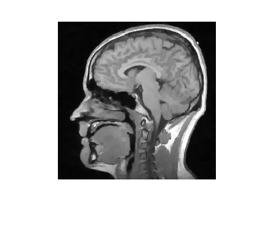
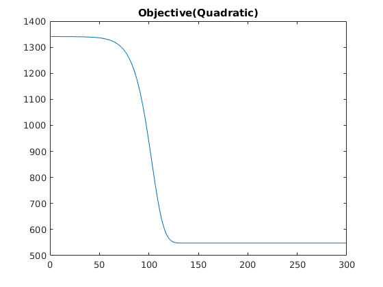
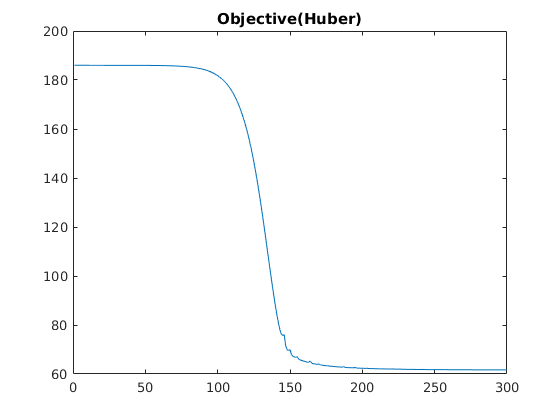
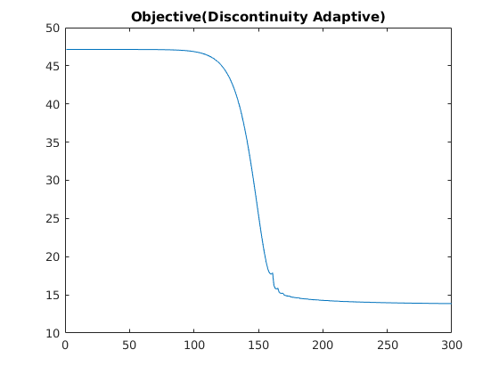

Contents
Inputting data and setting parameters
clear;
clc;
tic;
load('../data/assignmentImageDenoisingBrainNoisy.mat')
sample = real(imageNoisy(1:50,1:50));
sigma = std(sample(:));
fprintf('The noise level in the real part of the image is %.4f\n',sigma);
The noise level in the real part of the image is 0.0609
Quadratic Prior
x1 = imageNoisy;
shiftedmatrices = {circshift(imageNoisy,1,2),circshift(imageNoisy,-1,2),circshift(imageNoisy,1,1),circshift(imageNoisy,-1,1)};
alpha = 0.22;
gamma = 0;
[values1,x1] = optimise(alpha,gamma,x1,imageNoisy,shiftedmatrices,@quadratic,@quadratic_gradient);
save('../results/denoised_quad.mat','x1');
x2 = imageNoisy;
shiftedmatrices = {circshift(imageNoisy,1,2),circshift(imageNoisy,-1,2),circshift(imageNoisy,1,1),circshift(imageNoisy,-1,1)};
tau = 0.000001;
alpha = 0.95;
gamma = 0.006;
[values2,x2] = optimise(alpha,gamma,x2,imageNoisy,shiftedmatrices,@huber,@huber_gradient);
save('../results/denoised_huber.mat','x2');
Discontinuity Adaptive Prior
x3 = imageNoisy;
shiftedmatrices = {circshift(imageNoisy,1,2),circshift(imageNoisy,-1,2),circshift(imageNoisy,1,1),circshift(imageNoisy,-1,1)};
alpha = 0.99;
gamma = 0.0015;
[values3,x3] = optimise(alpha,gamma,x3,imageNoisy,shiftedmatrices,@adaptive,@adaptive_gradient);
save('../results/denoised_adaptive.mat','x3');
Quadratic Prior
figure, imshow(abs(x1));
Huber Prior
figure, imshow(abs(x2));
Adaptive
figure, imshow(abs(x3));

Noisy
figure, imshow(abs(imageNoisy));
Report Objective functions
figure,plot(values1),title('Objective(Quadratic)');
figure,plot(values2),title('Objective(Huber)');
figure,plot(values3),title('Objective(Discontinuity Adaptive)');
toc;
Elapsed time is 20.343788 seconds.
  